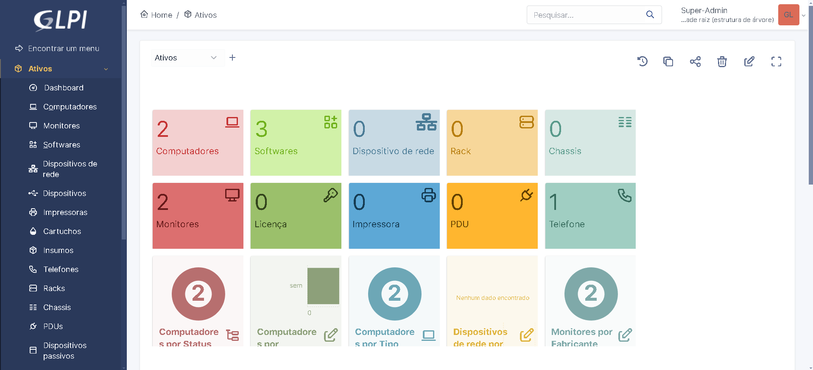

GLPI
INSTALAÇÃO DO GLPI
O GLPI é um sistema de gerenciamento de TI, que pode ser usado para adicionar ativos, chamados e etc. Existem três maneiras de instala-lo, sendo elas:
•XAMPP, uma distribuição do Apache.
•WSL, um subsistema linux.
•VirtualBox, VM que representa virtualmente um computador fisico.
Processo de instalação
Primeiro Passo
Eu optei por utilizar o WSL, que pode ser instalado pelo próprio terminal powershell do windows como administrador com o comando 'wsl --install'.
Caso já tenha o wsl instalado, confirme se esta atualizado com o seguinte comando 'wsl --update'.
Distribuição Linux
Você deve escolher qual distribuição irá utilizar, você pode instalar a distribuição Ubuntu, por exemplo, diretamente da Microsoft Store. Abra a Microsoft Store, procure por "Ubuntu" e instale.
Instalar Dependências no WSL
Segundo Passo
Atualize os pacotes do sistema com 'sudo apt update && sudo apt upgrade -y'
em seguida instale o Apache, MariaDB e PHP com 'sudo apt install apache2 mariadb-server php libapache2-mod-php php-mysql php-xml php-mbstring php-curl php-cli php-gd php-imap php-ldap php-apcu php-intl php-zip wget unzip -y'
Configure o MariaDB
Terceiro Passo
Inicie o MariaDB e configure a senha do root:
'sudo service mysql start sudo mysql_secure_installation'
Siga as instruções para definir uma senha para o usuário root e melhorar a segurança.
Crie o Banco de Dados
Crie o banco de dados e usuário para o GLPI:
'sudo mysql -u root -p'
No Promp do MariaDB, execute:
'CREATE DATABASE glpi; CREATE USER 'glpiuser'@'localhost' IDENTIFIED BY 'senha_secreta'; GRANT ALL PRIVILEGES ON glpi.* TO 'glpiuser'@'localhost'; FLUSH PRIVILEGES; EXIT;'
Baixar e configurar o GLPI
Quarto Passo
Baixe o GLPI:
'cd /tmp wget https://github.com/glpi-project/glpi/releases/download/10.0.7/glpi-10.0.7.tgz'
extraia e mova os arquivos:
'tar -xvzf glpi-10.0.7.tgz sudo mv glpi /var/www/html/ sudo chown -R www-data:www-data /var/www/html/glpi sudo chmod -R 755 /var/www/html/glpi'
Configurar o Apache
Quinto Passo
Crie um novo arquivo de configuração para o GLPI:
'sudo nano /etc/apache2/sites-available/glpi.conf'
adicione o seguinte conteudo ao arquivo:
'
<Directory /var/www/html/glpi>
Options FollowSymLinks
AllowOverride All
Require all granted
</Directory>
ErrorLog ${APACHE_LOG_DIR}/glpi_error.log
CustomLog ${APACHE_LOG_DIR}/glpi_access.log combined
'
Habilitar a configuração e o módulo de reescrita do Apache:
'sudo a2ensite glpi.conf sudo a2enmod rewrite sudo systemctl restart apache2'
Concluir a instalação do GLPI
Sexto Passo
Acesse a interface web:
Abra seu navegador e vá para http://localhost/glpi ou o nome do servidor configurado (glpi.example.com).
Seguir o assistente de instalação:
Siga os passos fornecidos pela interface web do GLPI para completar a instalação. Use o banco de dados glpi, o usuário glpiuser, e a senha que você configurou anteriormente.
Finalizar e acessar o GLPI
Setimo Passo
Acessar o GLPI:
Após completar a instalação, você pode acessar o GLPI através do endereço configurado. Os detalhes de login padrão são: Usuário: glpi Senha: glpi
Segurança:
Não se esqueça de mudar a senha dos usuários padrão e ajustar as permissões conforme necessário para garantir a segurança do sistema.
Seguindo esses passos, você terá o GLPI instalado e funcionando no WSL, pronto para ajudar na gestão dos serviços de TI da sua organização.
Oitavo passo
Por último, segue o meu exemplo do GLPI a baixo:

parafraseando o cantor BK, na musica amanhecer, 'E no final, meu sonho é igual'.
Agora é necessario desfrutar do seu sistema GLPI...